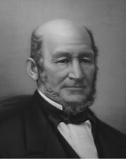
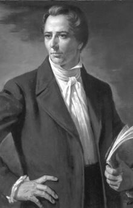

Why is it important to read the Book of Mormon before trying to gain a testimony of its divinity? (10:3) President Boyd K. Packer testified: “After you have read the Book of Mormon, you become qualified to inquire of the Lord, in the way that He prescribes. . . . You will be eligible, on the conditions He has established, to receive that personal revelation” (“Things of My Soul,” 61).
Elder Parley P. Pratt described his experience the first time he read the Book of Mormon: “I opened it with eagerness, and read its title page. I then read the testimony of several witnesses in relation to the manner of its being found and translated. After this I commenced its contents by course. I read all day; eating was a burden, I had no desire for food; sleep was a burden when the night came, for I preferred reading to sleep.
“As I read, the spirit of the Lord was upon me, and I knew and comprehended that the book was true” (Autobiography of Parley P. Pratt, 37).
What does it mean to ask with “real intent”? (10:4) “To access information from heaven, one must first have a firm faith and a deep desire. One needs to ‘ask with a sincere heart [and] real intent, having faith in [Jesus] Christ’ (Moroni 10:4). ‘Real intent’ means that one really intends to follow the divine direction given” (Nelson, “Ask, Seek, Knock,” 81).
The Importance of a Testimony
Public domain.
Moroni 10:3–5 contains an invitation and a promise from Moroni about coming to know the truth of the Book of Mormon. A similar process can be used to build one’s personal testimony of the gospel. Why is it important to have such a testimony?
“President Heber C. Kimball, a [counselor to Brigham Young in] the First Presidency, prophesied: ‘Let me say to you, that many of you will see the time when you will have all the trouble, trial and persecution that you can stand, and plenty of opportunities to show that you are true to God and his work. This Church has before it many close places through which it will have to pass before the work of God is crowned with victory. . . .
“‘The time will come when no man nor woman will be able to endure on borrowed light. Each will have to be guided by the light within himself. If you do not have it, how can you stand?’” (Whitney, Life of Heber C. Kimball, 449–50).
How may we receive the promise that the Holy Ghost will teach us the “truth of all things”? (10:5) “The Book of Mormon teaches that God will manifest the truth of spiritual things unto us by the power of the Holy Ghost (see Moroni 10:4–5). In modern revelation God promises us that we will receive ‘knowledge’ by His telling us in our mind and in our heart ‘by the Holy Ghost’ (D&C 8:1–2).
“One of the greatest things about our Heavenly Father’s plan for His children is that each of us can know the truth of that plan for ourselves. That revealed knowledge does not come from books, from scientific proof, or from intellectual pondering. As with the Apostle Peter, we can receive that knowledge directly from our Heavenly Father through the witness of the Holy Ghost” (Oaks, “Testimony,” 26).
Elder Bruce R. McConkie taught: “Moroni invites all men to read, ponder, and pray about the Book of Mormon. He promises each sincere person—each person who asks the Father, in the name of Christ, for a witness that the work is true; each person who asks ‘with a sincere heart, with real intent, having faith in Christ’—that the Lord ‘will manifest the truth’ of the Book of Mormon unto him ‘by the power of the Holy Ghost’ (Moroni 10:4). This testimony may come before baptism. Similarly, before baptism sincere truth seekers can come to know, by the power of the Holy Ghost, that Jesus is the Lord and that Joseph Smith is a prophet. They are then invited to keep all the truth they already have and to come and receive the added light and knowledge that has come by revelation in our day.
“Peter’s witness, a witness borne at Caesarea Philippi by the power of the Holy Ghost that Jesus was ‘the Christ, the Son of the living God’ (Matthew 16:16), was given before the chief apostle had received the gift of the Holy Ghost. That holy endowment did not come until the day of Pentecost. Then, for the first time, he and his fellow apostles received the gift that would teach them all things and bring all things to their remembrance” (New Witness, 262–63).
Why is it important to “deny not the gifts of God”? (10:8) Elder Robert D. Hales observed: “To find the gifts we have been given, we must pray and fast. Often patriarchal blessings tell us the gifts we have received and declare the promise of gifts we can receive if we seek after them. I urge you each to discover your gifts and to seek after those that will bring direction to your life’s work and that will further the work of heaven.
“During our time here on earth, we have been charged to develop the natural gifts and capabilities Heavenly Father has blessed us with. Then it will be our opportunity to use these gifts to become teachers and leaders of God’s children wherever they may be found on earth. To exercise these gifts, we must develop a purity of heart” (“Gifts of the Spirit,” 16).
How are we to obtain spiritual gifts and to whom are they given? (10:17) President Boyd K. Packer explained: “I take the word he to refer to us, meaning that the gifts will be received as we will.” President Packer further explained the reception of gifts of the Spirit: “I must emphasize that the word gift is of great significance, for a gift may not be demanded or it ceases to be a gift. It may only be accepted when proffered. . . . Spiritual gifts . . . are a product of our faith, and if we do not have them, something is less than it should be [see Moroni 7:35–38; 10:24]” (Shield of Faith, 94–104).
President Henry B. Eyring described related requirements for receiving spiritual gifts: “Stay close to the Church if you want your faith in God to grow. And as it grows, so will your ability to claim the promise you were given that you can receive the gifts of the Spirit. . . . [Another] requirement for the companionship of the Holy Ghost is pure motive. If you want to receive the gifts of the Spirit, you have to want them for the right reasons. Your purposes must be the Lord’s purposes. To the degree your motives are selfish, you will find it difficult to receive those gifts of the Spirit that have been promised to you. . . . When we pray for the gifts of the Spirit—and we should—one for which I pray is that I might have pure motives, to want what our Father wants for His children and for me, and to feel, as well as to say, that what I want is His will to be done” (“Gifts of the Spirit for Hard Times,” 23–24).
In what ways are faith, hope, and charity related? (10:20–21) “Hope is often linked with faith. Hope and faith are commonly connected to charity. Why? Because hope is essential to faith; faith is essential to hope; faith and hope are essential to charity. They support one another like legs on a three-legged stool. All three relate to our Redeemer.
“Faith is rooted in Jesus Christ. Hope centers in his Atonement. Charity is manifest in the ‘pure love of Christ’ [Moroni 7:47]. These three attributes are intertwined like strands in a cable and may not always be precisely distinguished. Together they become our tether to the celestial kingdom” (Nelson, “More Excellent Hope,” 61).
How does hope triumph over despair? (10:22) “Admittedly, we have ample reason to be deeply concerned because we see no immediate answers to the seemingly unsolvable problems confronting the human family. But regardless of this dark picture, which will ultimately get worse, we must never allow ourselves to give up hope! Moroni, having seen our day, counseled, ‘Wherefore, there must be faith; and if there must be faith there must also be hope (Moro. 10:20)” (Ballard, “Joy of Hope Fulfilled,” 31).
What can we do to develop the faith necessary to “do all things which are expedient” to the Lord? (10:23) “If you will let your heart be drawn to the Savior and always remember Him, and if you will draw near to our Heavenly Father in prayer, you will have put on spiritual armor. You will be protected against pride because you will know that any success comes not from your human powers. And you will be protected against the thoughts which come rushing in upon us that we are too weak, too inexperienced, too unworthy to do what we are called of God to do to serve and help save His children. We can have come into our hearts [this promise recorded by] Moroni” (Eyring, Because He First Loved Us, 74).
What is the significance of Moroni’s warning to heed the precepts and teachings of the Book of Mormon? (10:24–29) “Any group which has access to [the Book of Mormon] is enormously accountable. . . . The Book of Mormon testifies that God will judge the nations that possess [it] . . . (2 Nephi 25:22). In fact, Nephi, Jacob, Mormon, and Moroni, the four most prominent writers of the book, all testify in sobering farewell statements that we will stand with them at the judgment bar of God to answer for what we have done with the teachings of the Book of Mormon (see 2 Nephi 33:10–15; Jacob 6:5–13; Mormon 7:5–10; Moroni 10:24–34). These prophets want us to know that part of our judgment will be based on how well we have used their teachings in our lives” (Hansen, “Preparing for the Judgment,” 98).
President Joseph Fielding Smith observed: “It seems to me that any member of this Church would never be satisfied until he or she had read the Book of Mormon time and time again, and thoroughly considered it. . . .
“No member of this Church can stand approved in the presence of God who has not seriously and carefully read the Book of Mormon” (in Conference Report. Oct. 1961, 18).
What do “beautiful garments” represent? (10:31) “The Lord states: ‘For Zion must increase in beauty, and in holiness; her borders must be enlarged; her stakes must be strengthened; yea, verily I say unto you, Zion must arise and put on her beautiful garments’ (D&C 82:14).
“Here the Lord declares another great purpose of a stake: to be a beautiful emblem for all the world to see. The phrase ‘put on her beautiful garments’ refers, of course, to the inner sanctity that must be attained by every member who calls himself or herself a Saint. Zion is ‘the pure in heart’ (D&C 97:21).
“Stakes in Zion are strengthened and Zion’s borders enlarged as members reflect the standard of holiness that the Lord expects of His chosen people” (Benson, “‘Strengthen Thy Stakes,’” 2).
“‘Put on thy strength, O Zion’ is an expression of prophets through the ages. This was interpreted by the Prophet Joseph Smith in this manner:
“‘[This has] reference to those whom God should call in the last days, who should hold the power of priesthood to bring again Zion, and the redemption of Israel; and to put on her strength is to put on the authority of the priesthood, which she, Zion, has a right to by lineage” (D&C 113:8; italics added)” (Benson, “‘Strengthen Thy Stakes,’” 2).
The Importance of the Book of Mormon
Courtesy Intellectual Reserve, Inc.
After spending a day in council with the Twelve Apostles at the home of President Brigham Young, the Prophet said, “I told the brethren that the Book of Mormon was the most correct of any book on earth, and the keystone of our religion, and a man would get nearer to God by abiding by its precepts, than by any other book” (Joseph Smith [manual], 64).
“Take away the Book of Mormon and the revelations, and where is our religion? We have none” (Joseph Smith [manual], 196).
How do we become perfected in Christ? (10:32–33) “We will not attain a state of perfection in this life, but we can and should press forward with faith in Christ along the strait and narrow path and make steady progress toward our eternal destiny. The Lord’s pattern for spiritual development is ‘line upon line, precept upon precept, here a little and there a little’ (2 Nephi 28:30). Small, steady, incremental spiritual improvements are the steps the Lord would have us take. Preparing to walk guiltless before God is one of the primary purposes of mortality and the pursuit of a lifetime; it does not result from sporadic spurts of intense spiritual activity” (Bednar, “Clean Hands and a Pure Heart,” 82).
Elder Bruce R. McConkie stated: “Everyone in the Church who is on the straight and narrow path, who is striving and struggling and desiring to do what is right, though is far from perfect in this life; if he passes out of this life while he’s on the straight and narrow, he’s going to go on to eternal reward in his Father’s kingdom.
“We don’t need to get a complex or get a feeling that you have to be perfect to be saved. You don’t. There’s only been one perfect person, and that’s the Lord Jesus, but in order to be saved in the Kingdom of God and in order to pass the test of mortality, what you have to do is get on the straight and narrow path—thus charting a course leading to eternal life—and then, being on that path, pass out of this life in full fellowship. I’m not saying that you don’t have to keep the commandments. I’m saying you don’t have to be perfect to be saved. If you did, no one would be saved. The way it operates is this: You get on the path that’s named the ‘straight and narrow.’ You do it by entering at the gate of repentance and baptism. The straight and narrow path leads from the gate of repentance and baptism, a very great distance, to a reward that is called eternal life. If you’re on that path and pressing forward, and you die, you’ll never get off the path. There is no such thing as falling off the straight and narrow path in the life to come, and the reason is that this life is the time that is given to men to prepare for eternity. Now is the time and the day of your salvation, so if you’re working zealously in this life—though you haven’t fully overcome the world and you haven’t done all you hoped you might do—you’re still going to be saved. You don’t have to do what Jacob said, ‘Go beyond the mark.’ You don’t have to live a life that’s truer than true. You don’t have to have an excessive zeal that becomes fanatical and becomes unbalancing. What you have to do is stay in the mainstream of the Church and live as upright and decent people live in the Church—keeping the commandments, paying your tithing, serving in the organizations of the Church, loving the Lord, staying on the straight and narrow path. If you’re on that path when death comes—because this is the time and the day appointed, this the probationary estate—you’ll never fall from it, and, for all practical purposes, your calling and election is made sure. Now, that isn’t the definition of that term, but the end result will be the same” (as cited in McConkie, Here We Stand, 174–75).
Why did Moroni refer to the judgment of the Lord as “pleasing”? (10:34) If you love the Lord and others and seek to keep His commandments, “He will see and reward it. If you do this often enough and long enough, you will feel a change in your very nature through the Atonement of Jesus Christ. Not only will you feel closer to Him, but you will also feel more and more that you are becoming like Him. Then, when you do see Him, as we all will, it will be for you as it was for Moroni. . . .
“If we serve with faith, humility, and a desire to do God’s will, I testify that the judgment bar of the great Jehovah will be pleasing. We will see our loving Father and His Son as They see us now—with perfect clarity and with perfect love” (Eyring, “Where Is the Pavilion?” 75).

